The rescue that became the product.
An outsourced agency had delivered a UI that couldn't be built, for a platform nobody used — not customers, and not the company itself. I defined the product architecture, redesigned the dashboard end to end and built the system underneath it, so customers could run complex AI campaigns without hand-holding.
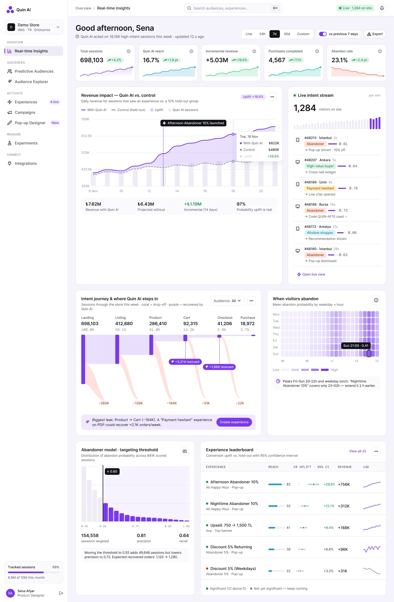
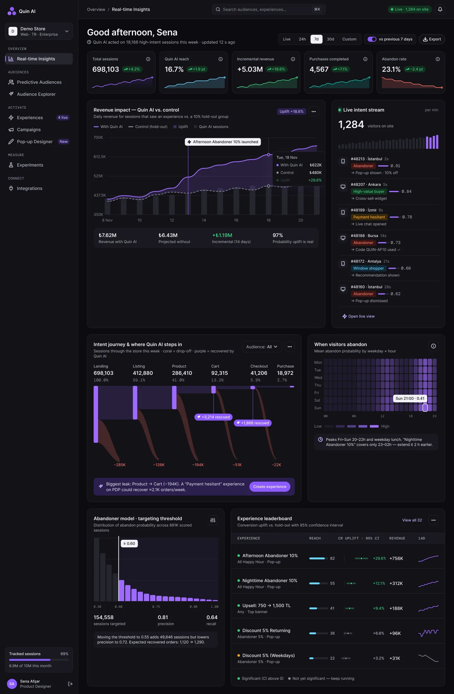
Split one tangled product into two objects — experiences and campaigns — each with its own report.
Shipped V1 without the AI features the company sold itself on, so a new customer could learn it in one sitting.
BRDs, interactive prototypes and a variable-driven system with four breakpoint modes.
Working out what could actually exist
The legacy platform worked strictly as an internal tool, and even internally it had lost: the team configured everything in the admin panel, then went back to Excel to read the results. No customer used the portal, and the agency concept accounted for neither the technical constraints nor the people who would use it.
So the first job wasn't drawing. With the CTO, the lead developer, the front-end developer and the customer success lead, I ran user research, mapped the competition and drew the flows the engine could genuinely support — and only then decided what the interface had to carry.
Two objects, each with one job
An experience decides who sees something and when: an audience, a schedule, and campaigns in priority order — the first one whose conditions match wins. A campaign decides what is shown: its type, conditions and content. Campaigns are reusable, so one can run inside many experiences, and each object gets its own report.
V1 was scoped against the same map. We parked the live feed and the AI-generated insights: onboarding got dramatically simpler and the workload came down enough to ship. The cost was real — for a while the insights went out as separate reports, assembled by hand by the analytics and customer success teams.
A rescue that takes another year isn't a rescue — so V1 shipped without the AI features the company sold itself on.
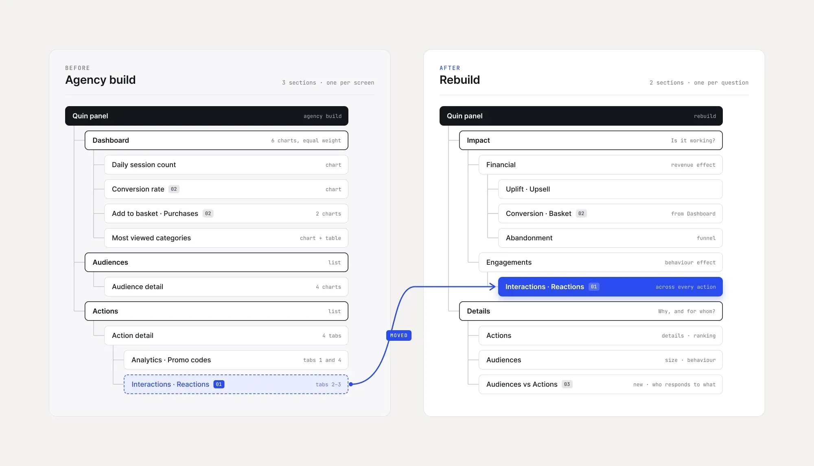
Rules you can read off the screen
Campaign set-up is where the architecture meets an ops team that uses it all day, so its rules are visible rather than documented: state is one word and one switch; priority is shown as order, and the number says who wins; conditions read as sentences — “longer than 3 min”, never a raw range; a finished step keeps its one-line answer.
The pop-up builder was built natively rather than bolted on, because until then every campaign had been a custom build. Two months of design checked it against what people had actually been filing requests for, then two months of build and testing, and a week to migrate every existing action into the new format.
After the builder, customer success and the front-end developer could put a requested design live themselves — no developer, no custom build, no queue.
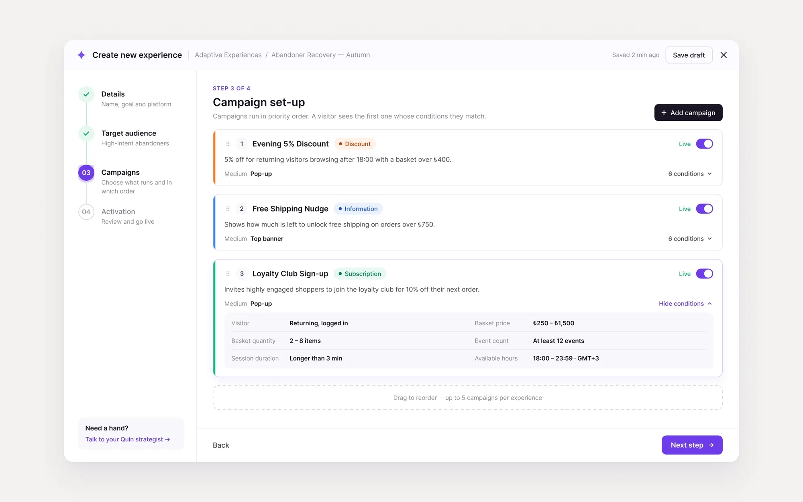
The documents a startup says it doesn't have time for
Business Requirement Documents and interactive prototypes became the shared reference for engineering, written to keep pace with a team that fixes things the day they're reported. Legal constraints such as roles and permissions went into the spec itself.
The handover file runs on the same discipline. 128 variables sit in five collections, and layout values — grid, margins, nav and panel widths — live in one Layout collection with four breakpoint modes, so a responsive decision is made once and read everywhere. 17 component sets carry 60 variants, and each of the 33 flow steps is drawn at 1440 and 390 with a step card for trigger, result, behaviour and edge cases.
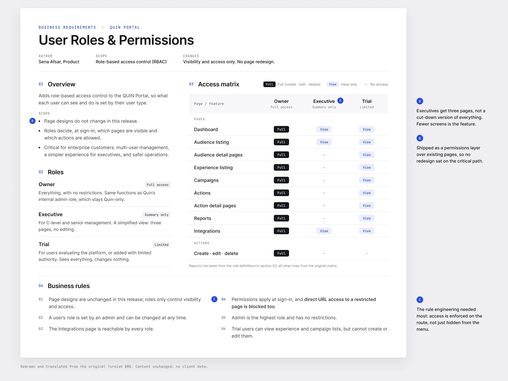
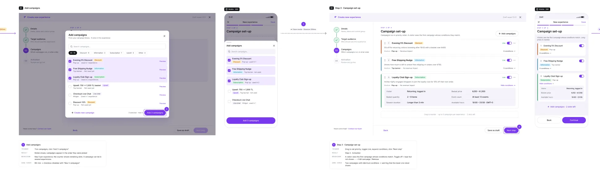
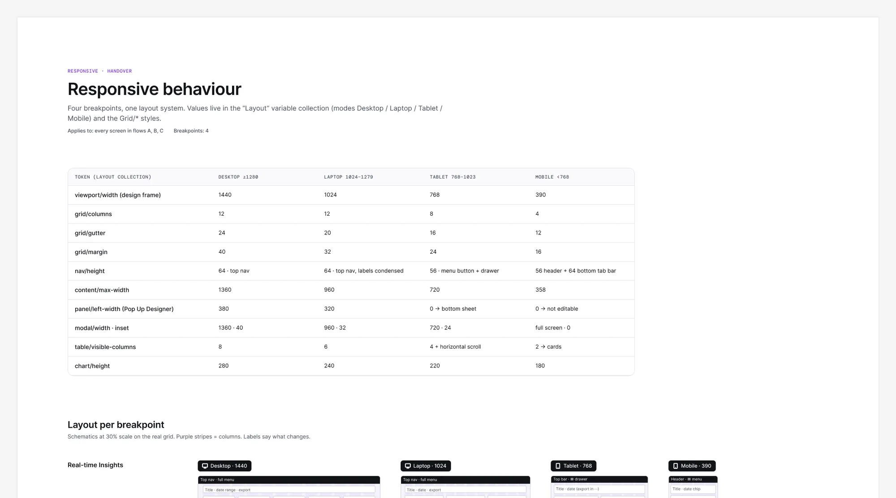
Bringing back what V1 parked
I still work on Quin, which means living with every 2022 decision. The next version, currently in design, returns to the trade-off V1 made: the live intent stream and the AI insights move onto the dashboard itself, light and dark come from one colour collection, and the core flows are rebuilt for a phone.
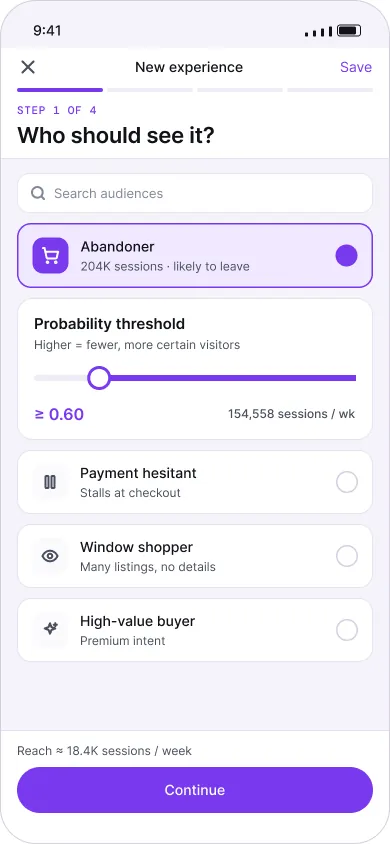
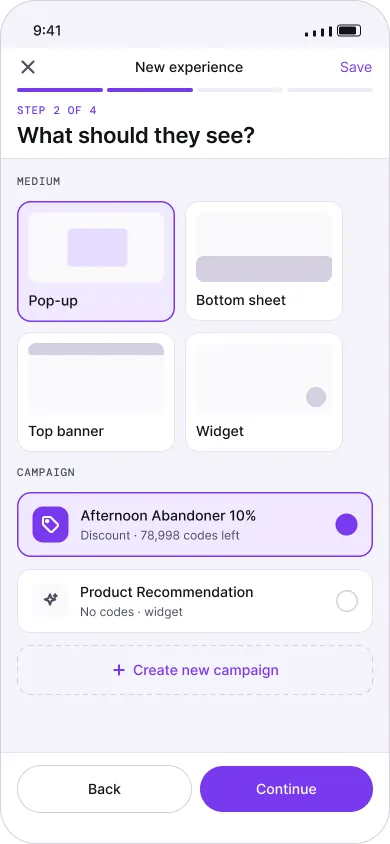
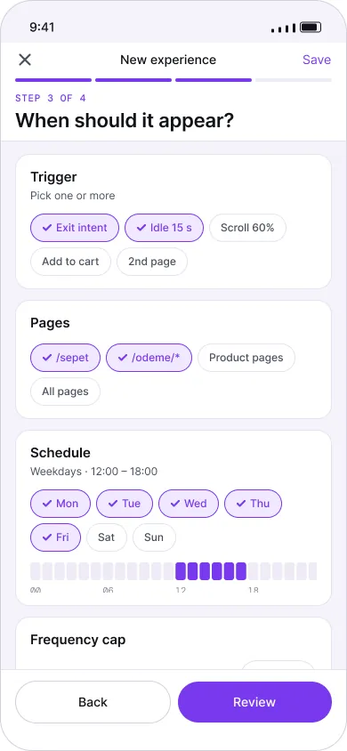
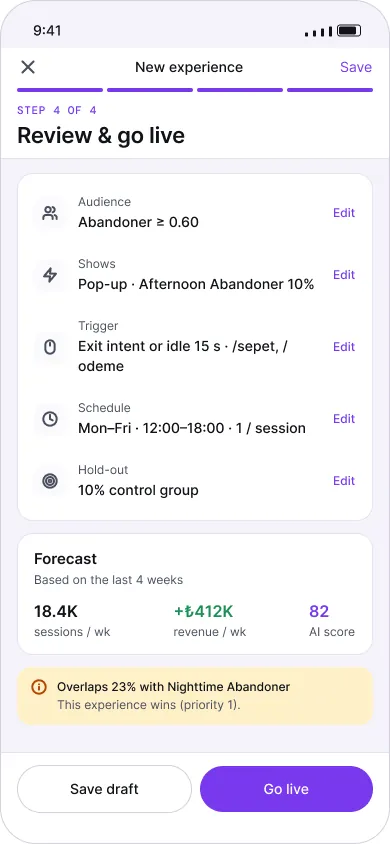
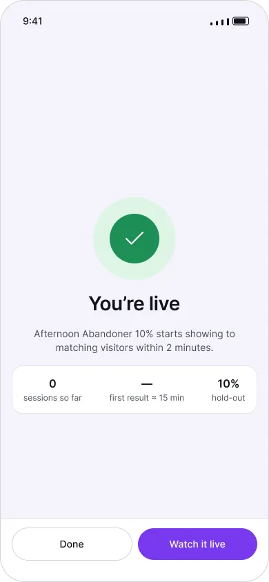
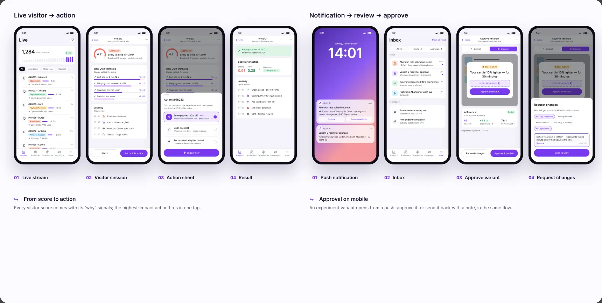
A website that leads with the product
Alongside the product I designed the marketing site: the promise in one line, the real dashboard as the hero instead of an illustration, and a layout that keeps its structure from desktop 1440 to tablet 768 and mobile 390 — with the responsive rules documented next to the pages and a dedicated mobile menu.
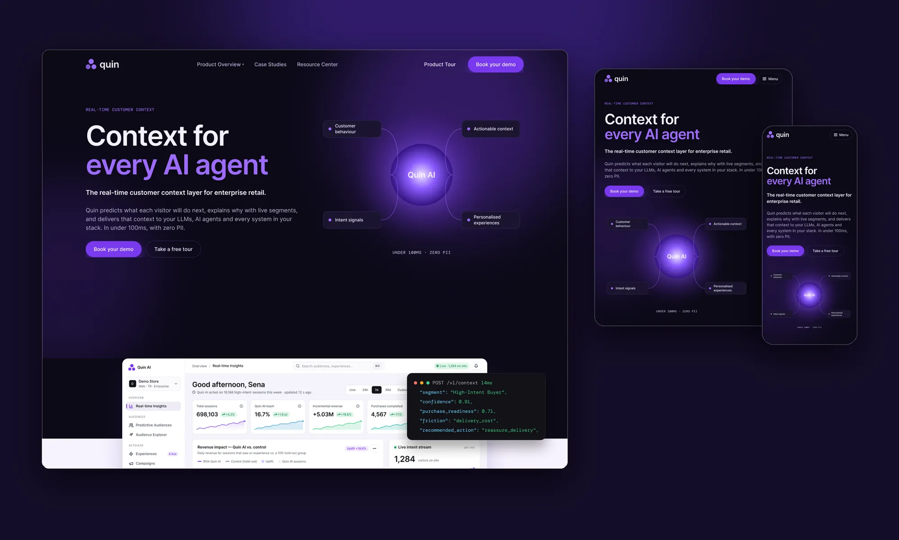
Three years of calling it a side feature
We refused to build the pop-up builder for three years. The argument always sounded sensible: it isn't our value proposition, the prediction engine is. That was true and beside the point — the pop-up was where the prediction met a customer's customer, so it was where the whole product was judged. I would build it in year one.
A stagnant internal tool, turned into the product the company works in.
When I joined, nobody used the portal. After V1 went live, the whole internal team moved into it, sales started giving live demos during the sale itself, and half of the existing customers were running the dashboard on their own.
Bronze & Silver Stevie® 2026 · UK AI Index 2025 · Digital Impact Awards 2025 (with Penti) and 2023 (with Kingfisher Group).